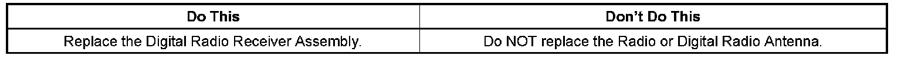
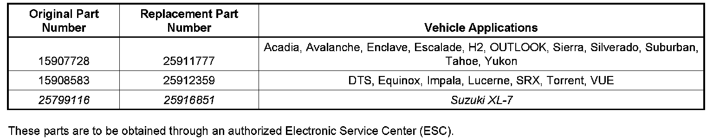
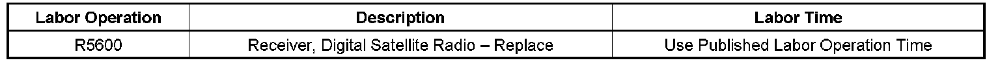

Audio System - XM Radio(R) Won't Retain Station Setting
TECHNICALBulletin No.: 08-08-44-008A
Date: April 25, 2008
Subject:
XM Radio Does Not Retain Station Setting From Previous Key Cycle and Changes To Channel 1, The Preview Channel, at Vehicle Start-up (Replace Digital Radio Receiver Assembly)
Models:
2008 Buick Enclave, Lucerne
2008 Cadillac DTS, Escalade Models, SRX
2008 Chevrolet Avalanche, Equinox, Impala, Silverado, Suburban, Tahoe
2007-2008 GMC Acadia
2008 GMC Sierra, Yukon Models
2008 Pontiac Torrent
2008 HUMMER H2, H2 SUT
2007-2008 Saturn OUTLOOK
2008 Saturn VUE
2008 Suzuki XL-7
with XM Satellite Radio (RPO U2K)
Supercede:
This bulletin is being revised to add the Suzuki XL-7 model. Please discard Corporate Bulletin Number 08-08-44-008 (Section 08 - Body & Accessories).
Condition
Some customers may comment that the XM radio does not retain the station setting from the previous key cycle and changes to channel 1 at vehicle start-up. After start-up, the XM radio will be on the preview channel 1.
Cause
A software anomaly in the Digital Radio Receiver Assembly may cause this condition.
Correction

Technicians are to replace the Digital Radio Receiver Assembly with an updated design part. Refer to the Digital Radio Receiver Replacement procedure in SI. Also refer to the Digital Radio Receiver Setup procedure in SI for additional information.

Parts Information
Warranty Information

For vehicles repaired under warranty, use the table.

Disclaimer